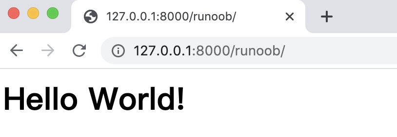
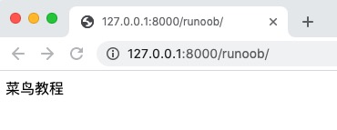
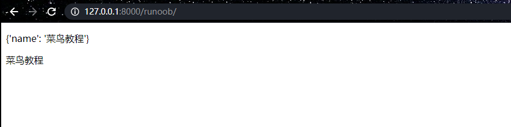
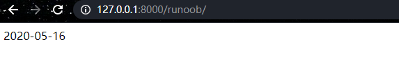
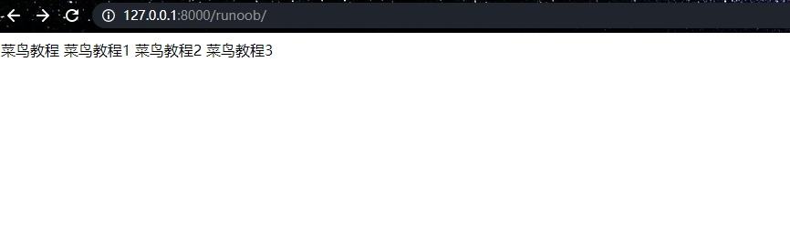
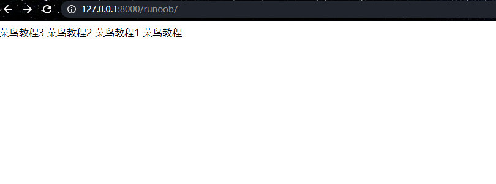
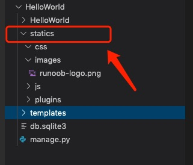
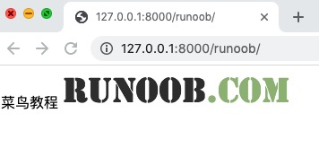
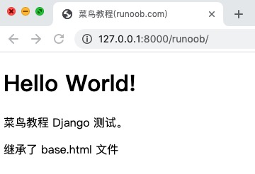

Django templates
Django's template system (Template System) is a core component used to separate business logic (Python) from the presentation layer (HTML). It allows developers to dynamically generate HTML pages through simple tags and variables.
In the previous chapter, we useddjango.http.HttpResponse()to output"Hello World！"This approach mixes data and views together, which does not conform to Django's MVT philosophy.
In this section, we will introduce the application of Django templates in detail. A template is a text used to separate the presentation form and content of a document.
| Features | Syntax/Examples | Applicable scenarios |
|---|---|---|
| Variable Rendering | {{ variable }} | Dynamically display data |
| Logic Control | {% if %}, {% for %} | Conditional/Loop rendering |
| Template inheritance | {% extends %}, {% block %} | Avoid duplicate HTML structures |
| Static Files | {% static 'path' %} | Load CSS/JS/images |
| Custom filters | @register.filter | Extend template functionality |
Template application examples
Continuing from the project in the previous chapter, we will create a templates directory under the HelloWorld directory and create a example.html file. The entire directory structure is as follows:
HelloWorld/
|-- HelloWorld
| |-- __init__.py
| |-- __init__.pyc
| |-- settings.py
| |-- settings.pyc
| |-- urls.py
| |-- urls.pyc
| |-- views.py
| |-- views.pyc
| |-- wsgi.py
| `-- wsgi.pyc
|-- manage.py
`-- templates
`-- example.html
The example.html file code is as follows:
HelloWorld/templates/example.html file code:
From templates we know that variables use double curly braces.{{ }}。
Next, we need to explain the template file path to Django. Open the HelloWorld/HelloWorld/settings.py file and modifyTEMPLATESinDIRSis[BASE_DIR / "templates"], as shown below:
HelloWorld/HelloWorld/settings.py file code:
TEMPLATES = [
{
'BACKEND': 'django.template.backends.django.DjangoTemplates',
'DIRS': [BASE_DIR / "templates"], # Modify here
'APP_DIRS': True,
'OPTIONS': {
'context_processors': [
'django.template.context_processors.debug',
'django.template.context_processors.request',
'django.contrib.auth.context_processors.auth',
'django.contrib.messages.context_processors.messages',
],
},
},
]
...
Now we modify views.py to add a new object to submit data to the template:
HelloWorld/HelloWorld/views.py file code:
As you can see, we use render here to replace the previously used HttpResponse. render also takes a dictionary context as a parameter.
The key-value pairs of elements in the context dictionary.helloCorresponds to variables in the template{{ hello }}。
HelloWorld/HelloWorld/urls.py file code:
Next, enter the HelloWorld directory and run the following command to start the server:
python3 manage.py runserver 0.0.0.0:8000
Visit Againhttp://127.0.0.1:8000/example, you can see the page:

In this way, we have completed using templates to output data, thereby achieving the separation of data and views.
Next, we will specifically introduce the commonly used syntax rules in templates.
Django template tags
Syntax:
{% tag %}
Control template logic, common tags:
| Tags | Purpose |
|---|---|
{% for %} | Looping through lists/dictionaries |
{% if %} | Conditional Judgment |
{% extends %} | Inherit base template |
{% block %} | Define content blocks that can be overridden by child templates |
{% include %} | Embed other template fragments |
{% url %} | Reverse resolution of URLs (to avoid hardcoded paths) |
{% csrf_token %} | Generate CSRF token (for POST forms) |
Variable
Template syntax:
view：｛"HTML变量名" : "views变量名"｝ HTML：｛｛变量名｝｝
HelloWorld/HelloWorld/views.py file code:
def example(request):
views_name = "Example"
return render(request,"example.html", {"name":views_name})
example.html in templates:
<p>{{ name }}</p>

Visit http://127.0.0.1:8000/example again, and you can see the page:

List
In example.html in templates, you can use.Retrieve the corresponding element by index subscript.
HelloWorld/HelloWorld/views.py file code:
def example(request):
views_list = ["Rookie Tutorial 1","Rookie Tutorial 2","Rookie Tutorial 3"]
return render(request, "example.html", {"views_list": views_list})
HelloWorld/templates/example.html file code:
Visit http://127.0.0.1:8000/example again, and you can see the page:

Dictionary
In example.html in templates, you can use.keyRetrieve the corresponding value.
HelloWorld/HelloWorld/views.py file code:
def example(request):
views_dict = {"name":"Example"}
return render(request, "example.html", {"views_dict": views_dict})
HelloWorld/templates/example.html file code:
Visit http://127.0.0.1:8000/example again, and you can see the page:

Filter
Template syntax:{{ Variable name | Filter: optional parameter }}
Template filters can modify a variable before it is displayed. Filters use the pipe character, as shown below:
{{ name|lower }}
After the {{ name }} variable is processed by the lower filter, the text is converted from uppercase to lowercase.
Filter pipes can be *chained*, that is, the output of one filter pipe can serve as the input of the next pipe:
{{ my_list|first|upper }}
The above example takes the first element and converts it to uppercase.
Some filters have parameters. Filter parameters follow after a colon and are always enclosed in double quotes. For example:
{{ bio|truncatewords:"30" }}
This will display the first 30 words of the variable bio.
Other filters:
- addslashes: Adds backslashes before any backslashes, single quotes, or double quotes.
- date : Formats a date or datetime object according to the specified format string parameter. Example:
{{ pub_date|date:"F j, Y" }} - length: Returns the length of the variable.
default
default provides a default value for the variable.
If the boolean value of the variable passed by views is false, the specified default value is used.
The following values are false:
0 0.0 False 0j "" [] () set() {} None
HelloWorld/HelloWorld/views.py file code:
def example(request):
name =0
return render(request, "example.html", {"name": name})
HelloWorld/templates/example.html file code:
Visit http://127.0.0.1:8000/example again, and you can see the page:

length
Returns the length of the object, applicable to strings and lists.
For a dictionary, it returns the number of key-value pairs; for a set, it returns the length after deduplication.
HelloWorld/HelloWorld/views.py file code:
def example(request):
name ="Example"
return render(request, "example.html", {"name": name})
HelloWorld/templates/example.html file code:
Visit http://127.0.0.1:8000/example again, and you can see the page:

filesizeformat
Display the file size in a more readable format (i.e., '13 KB', '4.1 MB', '102 bytes', etc.).
For a dictionary, it returns the number of key-value pairs; for a set, it returns the length after deduplication.
HelloWorld/HelloWorld/views.py file code:
def example(request):
num=1024
return render(request, "example.html", {"num": num})
HelloWorld/templates/example.html file code:
Visit http://127.0.0.1:8000/example again, and you can see the page:

date
Formats a date variable according to a given format.
FormattingY-m-d H:i:sreturnYear-Month-Day Hour:Minute:Secondtime in the format of.
HelloWorld/HelloWorld/views.py file code:
def example(request):
import datetime
now =datetime.datetime.now()
return render(request, "example.html", {"time": now})
HelloWorld/templates/example.html file code:
Visit http://127.0.0.1:8000/example again, and you can see the page:

truncatechars
If the total number of characters in a string exceeds the specified number, the trailing part will be truncated.
The truncated string will end with...ending.
HelloWorld/HelloWorld/views.py file code:
def example(request):
views_str = "Example"
return render(request, "example.html", {"views_str": views_str})
HelloWorld/templates/example.html file code:
Visit http://127.0.0.1:8000/example again, and you can see the page:

safe
Marks a string as safe and does not require escaping.
Only use safe when you can guarantee that the data passed from views.py is absolutely safe.
It has the same effect as mark_safe in the backend views.py.
Django automatically escapes the tag syntax passed from views.py to HTML files, making its semantics ineffective. Adding the safe filter tells Django that the data is safe and does not need to be escaped, allowing the data semantics to take effect.
HelloWorld/HelloWorld/views.py file code:
def example(request):
views_str = "<a href='/index.html'>Click to jump</a>"
return render(request, "example.html", {"views_str": views_str})
HelloWorld/templates/example.html file code:
Visit http://127.0.0.1:8000/example again, and you can see the page:

if/else tag
The basic syntax format is as follows:
{% if condition %}
... display
{% endif %}
Or:
{% if condition1 %}
... display 1
{% elif condition2 %}
... display 2
{% else %}
... display 3
{% endif %}
Determines whether to output based on conditions. if/else supports nesting.
The {% if %} tag accepts and, or, or not keywords to evaluate multiple variables, or to negate a variable (not), for example:
{% if athlete_list and coach_list %}
athletes 和 coaches 变量都是可用的。
{% endif %}
HelloWorld/HelloWorld/views.py file code:
def example(request):
views_num = 88
return render(request, "example.html", {"num": views_num})
HelloWorld/templates/example.html file code:
Visit http://127.0.0.1:8000/example again, and you can see the page:

for tag
{% for %} allows us to iterate over a sequence.
Similar to the case of Python's for statement, the loop syntax is for X in Y, where Y is the sequence to iterate over and X is the variable name used in each specific loop.
In each loop, the template system will render in{% for %}and{% endfor %}all content between.
For example, given an athlete list variable athlete_list, we can use the following code to display this list:
<ul>
{% for athlete in athlete_list %}
<li>{{ athlete.name }}</li>
{% endfor %}
</ul>
HelloWorld/HelloWorld/views.py file code:
def example(request):
views_list = ["Example","Rookie Tutorial 1","Rookie Tutorial 2","Rookie Tutorial 3",]
return render(request, "example.html", {"views_list": views_list})
HelloWorld/templates/example.html file code:
Visit http://127.0.0.1:8000/example again, and you can see the page:

Add a reversed to the tag to make the list iterate in reverse:
{% for athlete in athlete_list reversed %}
...
{% endfor %}
HelloWorld/templates/example.html file code:
Visit http://127.0.0.1:8000/example again, and you can see the page:

Iterate Dictionary: You can directly use a dictionary.itemsMethod: use variable unpacking to get keys and values separately.
HelloWorld/HelloWorld/views.py file code:
def example(request):
views_dict = {"name":"Example","age":18}
return render(request, "example.html", {"views_dict": views_dict})
HelloWorld/templates/example.html file code:
Visit http://127.0.0.1:8000/example again, and you can see the page:

- forloop.counter: Gets the loop index in order, starting from 1.
- forloop.counter0: Gets the loop index in order, starting from 0.
- forloop.revcounter: Gets the loop index in reverse order, with the final index being 1.
- forloop.revcounter0: Gets the loop index in reverse order, with the final index being 0.
- forloop.first (usually used with the if tag): Returns True for the first item, False for others.
- forloop.last (usually used with the if tag): Returns True for the last item, False for others.
HelloWorld/HelloWorld/views.py file code:
def example(request):
views_list = ["a", "b", "c", "d", "e"]
return render(request, "example.html", {"listvar": views_list})
HelloWorld/templates/example.html file code:
Visit http://127.0.0.1:8000/example again, and you can see the page:

{% empty %}
Optional {% empty %} clause: It is executed when the loop is empty (i.e., when the boolean value of the argument after in is False).
HelloWorld/HelloWorld/views.py file code:
def example(request):
views_list = []
return render(request, "example.html", {"listvar": views_list})
HelloWorld/templates/example.html file code:
Visit http://127.0.0.1:8000/example again, and you can see the page:

The {% for %} tag can be nested:
{% for athlete in athlete_list %}
<h1>{{ athlete.name }}</h1>
<ul>
{% for sport in athlete.sports_played %}
<li>{{ sport }}</li>
{% endfor %}
</ul>
{% endfor %}
Comment Tag
Django comments use {# #}.
{# This is a comment #}
include tag
The {% include %} tag allows including the content of other templates in a template.
The following example includes the nav.html template:
{% include "nav.html" %}
csrf_token
csrf_token is used in form forms, and its function is cross-site request forgery protection.
If Not Used{% csrf_token %}Tag: when using a form, if you need to redirect to a page again, a 403 permission error will be reported.
Used{% csrf_token %}Tag: it will only succeed when submitting data through a form.
Analysis:
First, send a request to the server to obtain the login page. At this point, the csrf middleware will automatically generate a hidden input tag. The value attribute in this tag is a random string. When the user obtains the login page, they also obtain this hidden input tag.
Then, when the user needs to use a form to submit data, they will carry this input tag and submit it to the CSRF middleware. The reason is that when a form submits data, it includes all input tags. When the CSRF middleware receives the data, it will determine whether this random string is the one it sent to the user for the first time. If yes, the data submission succeeds; if not, it returns a 403 permission error.
Custom tags and filters
1. Create in the application directorytemplatetagsDirectory (at the same level as the templates directory, the directory name can only be templatetags).
HelloWorld/ |-- HelloWorld | |-- __init__.py | |-- __init__.pyc | |-- settings.py ... |-- manage.py `-- templatetags `-- templates
2. Create any py file in the templatetags directory, such as:my_tags.py。
3. The my_tags.py file code is as follows:
from django import template register = template.Library() #register的名字是固定的,不可改变
Modify the TEMPLATES option configuration in the settings.py file, and add the libraries configuration:
settings.py configuration file
TEMPLATES = [
{
'BACKEND': 'django.template.backends.django.DjangoTemplates',
'DIRS': [BASE_DIR, "/templates",],
'APP_DIRS': True,
'OPTIONS': {
'context_processors': [
'django.template.context_processors.debug',
'django.template.context_processors.request',
'django.contrib.auth.context_processors.auth',
'django.contrib.messages.context_processors.messages',
],
"libraries":{ # Add these three lines of configuration here
'my_tags':'templatetags.my_tags' # Add these three lines of configuration here
} # Add these three lines of configuration here
},
},
]
...
4. Use the decorator @register.filter to define a custom filter.
Note:The decorator can have at most 2 parameters.
@register.filter
def my_filter(v1, v2):
return v1 * v2
5. Use the decorator @register.simple_tag to define a custom tag.
@register.simple_tag
def my_tag1(v1, v2, v3):
return v1 * v2 * v3
6. Before using custom tags and filters, you need to import this py file at the very top of the body in the HTML file.
{% load my_tags %}7. Use custom filters in HTML.
{{ 11|my_filter:22 }}
8. Use custom tags in HTML.
{% my_tag1 11 22 33 %}
9. Semantic tags
Import mark_safe in this py file.
from django.utils.safestring import mark_safe
When defining tags, use the mark_safe method to make the tags semantic, which is equivalent to the html() method in jQuery.
It has the same effect as the safe filter in front-end HTML files.
@register.simple_tag
def my_html(v1, v2):
temp_html = "<input type='text' id='%s' class='%s' />" %(v1, v2)
return mark_safe(temp_html)
Use this custom tag in HTML to dynamically create tags on the page.
{% my_html "zzz" "xxx" %}
Configure static files
1. Create a statics directory in the project root directory.

2. Add the following configuration at the bottom of the settings file:
STATIC_URL = '/static/' # 别名
STATICFILES_DIRS = [
os.path.join(BASE_DIR, "statics"),
]
3. Create the css, js, images, and plugins directories under the statics directory, to hold CSS files, JS files, images, and plugins respectively.
4. Put the bootstrap framework into the plugins directory.
5. Import bootstrap in the head tag of the HTML file.
Note:At this point, the alias static in the configuration file should be used in the reference path, not the directory statics.
<link rel="stylesheet" href="../static/plugins/bootstrap-3.3.7/dist/css/bootstrap.css.html">
To use it in templates, you need to add{% load static %}code. In the following example, we import an image from the static directory.
HelloWorld/HelloWorld/views.py file code:
def example(request):
name ="Example"
return render(request, "example.html", {"name": name})
HelloWorld/templates/example.html file code:
Visit http://127.0.0.1:8000/example again, and you can see the page:

Template inheritance
Templates can achieve reuse through inheritance, reducing redundant content.
The header and footer content of a webpage is generally consistent, so we can use template inheritance to achieve reuse.
The parent template is used to place reusable content, and the child template inherits the parent template's content and places its own content.
parent template
Tag block...endblock:The reserved blocks in the parent template are left for the child template to fill with differentiated content. Different reserved blocks must not have the same name.
{% block 名称 %}
预留给子模板的区域，可以设置设置默认内容
{% endblock 名称 %}
child template
The child template uses the extends tag to inherit the parent template:
{% extends "父模板路径"%}
If the child template does not set the content of the parent template's reserved blocks, the default content set in the parent template is used. Of course, you can also leave them unset, and they will be empty.
The child template sets the content of the parent template's reserved blocks:
{ % block 名称 % }
内容
{% endblock 名称 %}
Next, we first create a base.html file in the templates directory of the previous project. The code is as follows:
HelloWorld/templates/base.html file code:
In the above code, the block tag named mainbody is the part that can be replaced by inheritors.
All {% block %} tags tell the template engine that child templates can override these parts.
In example.html, inherit base.html and replace specific blocks. The modified example.html code is as follows:
HelloWorld/templates/example.html file code:
The first line of code indicates that example.html inherits the base.html file. It can be seen that block tags with the same name here are used to replace the corresponding blocks in base.html.
Revisit the address http://127.0.0.1:8000/example, the output is as follows:

other extensions